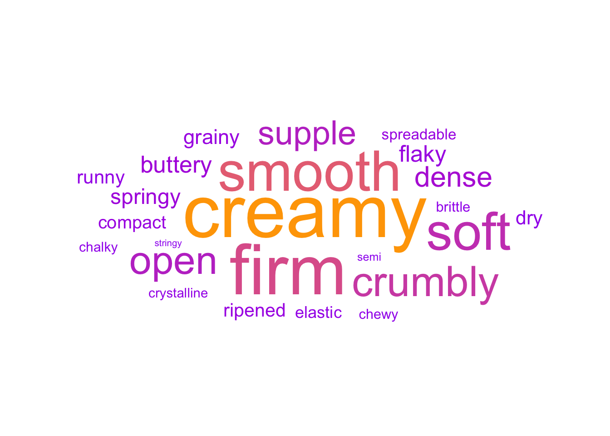

Dataset saved as 'cheeses_dataset.csv'3 Result
3.1 Distribution of Milk Types

The bar chart reveals that cow’s milk overwhelmingly dominates cheese production, with a significantly higher count compared to other milk types. Goat and sheep milk are moderately popular, often appearing in pure form or mixed combinations like “goat, sheep” or “cow, goat.” Exotic milk types such as camel, moose, and water buffalo are used rarely, likely indicating niche or regional specialties. Overall, the chart emphasizes the global reliance on cow’s milk for cheese-making while also showcasing the diversity and occasional use of alternative milk sources.
3.2 Top 20 Regions Producing Cheese
This bar chart highlights the top 20 regions contributing to cheese production. The regions are ranked based on the number of cheese types produced, and their names have been abbreviated for better readability.
The chart demonstrates that Quebec leads significantly as the highest cheese-producing region, followed by Sulzberg and South Australia, which also exhibit considerable production counts. These regions seem to be prominent hubs for diverse cheese production, indicating established dairy industries and cheese-making traditions.
Regions such as Gujarat, Prince Edward Island, and Piedmont also show a notable number of cheese types produced, reflecting their regional expertise in specific cheese varieties. Other regions like Oviken, Inagh, Co Clare, and Colorado represent smaller yet significant contributions, emphasizing their specialization in cheese production despite their relatively smaller scale.
Interestingly, regions with particularly long names, such as Bregenzerwald, Kleinwalsertal, etc., and Macedonia, Thrace, etc., demonstrate that certain geographically broad regions may encompass multiple areas contributing to cheese diversity.
Overall, the chart provides an insightful overview of the global diversity in cheese production, emphasizing the dominance of certain regions while also showcasing the contributions of less prominent areas. This visualization helps identify key cheese-producing areas and the geographic spread of this culinary art.
3.3 Distribution of Rind Types

This chart provides an insightful overview of the distribution of cheese rind types, showcasing the diverse methods used in cheese production. The “natural” rind type emerges as the most prevalent, indicating a strong preference for cheeses that rely on traditional maturation processes without significant external modifications. This dominance reflects the appeal of natural, artisanal flavors and textures among both producers and consumers.
“Washed” rinds, which rank second, highlight the popularity of cheeses treated with brine or other liquids during maturation. This technique imparts distinctive characteristics, often resulting in cheeses with robust and complex flavors. Similarly, “rindless” cheeses, which occupy the third spot, suggest a considerable demand for smoother, milder cheeses that cater to those seeking simplicity in taste and texture.
Further down the distribution, “bloomy” and “mold-ripened” rinds represent classic options like brie and camembert, renowned for their creamy interiors and soft, edible exteriors. These types underline the enduring appeal of soft-ripened cheeses in the global market. Meanwhile, specialized rind types such as “waxed,” “artificial,” “leaf-wrapped,” “ash-coated,” and “cloth-wrapped” reflect artisanal or innovative approaches to cheese-making. These niche techniques often cater to specific regional traditions or consumer preferences for unique aesthetics and flavors.
The least common rind type, “plastic,” points to limited demand, likely due to its less natural appearance and association with industrial production. Overall, this chart emphasizes the balance between tradition and innovation in the cheese industry, with natural and traditional rind types commanding the most significant attention while specialty rinds cater to niche markets seeking distinct and memorable cheese experiences.
3.4 Distribution of Cheese Colors
Code
library(ggplot2)
library(dplyr)
# Filter out NA values in the color column
cheeses_clean_filtered <- cheeses_clean %>%
filter(!is.na(color))
# Define a mapping of color names to their actual colors
color_mapping <- c(
"yellow" = "yellow",
"white" = "white",
"straw" = "gold",
"pale yellow" = "lightgoldenrod",
"orange" = "orange",
"ivory" = "ivory",
"green" = "green",
"golden yellow" = "goldenrod",
"golden orange" = "darkorange",
"cream" = "cornsilk",
"brown" = "brown",
"blue" = "blue"
)
# Create the bar chart with corresponding colors and a border
ggplot(cheeses_clean_filtered, aes(x = color, fill = color)) +
geom_bar(color = "black", size = 0.2) + # Add black border around bars
coord_flip() +
scale_fill_manual(values = color_mapping) + # Map color names to actual colors
labs(
x = "Color",
y = "Count"
) +
theme_minimal() +
theme(legend.position = "none") # Remove the legend for a cleaner lookWarning: Using `size` aesthetic for lines was deprecated in ggplot2 3.4.0.
ℹ Please use `linewidth` instead.The bar chart displays the distribution of cheese colors, offering a visual representation of the variety and diversity in cheese appearances. The most dominant cheese colors include “pale yellow” and “ivory,” which are widely popular and signify mild and creamy cheeses often favored by a broad audience. These colors are commonly associated with cheeses like gouda, cheddar, or brie, showcasing their widespread appeal.
The presence of “yellow” and “white” as other significant contributors emphasizes the preference for cheeses with visually clean and classic hues, reflecting simplicity and tradition in cheese production. Cheeses of these colors are typically staples in households and cooking.
Smaller yet notable categories, such as “straw” and “cream,” highlight the nuanced shades that differentiate specialty cheeses. The inclusion of “golden yellow” and “golden orange” signifies richer, more intense varieties that likely cater to niche markets or gourmet selections. On the other hand, colors like “green,” “blue,” and “brown,” though less common, reflect unique or artisanal cheeses, such as blue cheese or certain mold-ripened varieties, which are prized for their distinct flavors and visual appeal.
This chart not only captures the aesthetic range of cheeses but also underscores the diversity in cheese-making traditions and consumer preferences, catering to both mainstream tastes and specialized demands.
3.5 Different Aromas of Cheeses
3.6 Synonyms of Cheese

3.7 Top 10 Cheese Producers

This bar chart showcases the top 10 cheese producers based on the number of cheese varieties they produce. La Maison Alexis de Portneuf Inc. leads the chart, reflecting its prominent role in the cheese industry with a broad and diverse range of offerings. This suggests a well-established reputation and possibly a global presence in the cheese market.
Other notable producers include Woodside Cheese Wrights and Sulzberger Käserebellen Sennerei GmbH, indicating their significant contribution to the cheese industry, likely through regional specializations or high-quality production standards. Companies such as Vandersterre Groep International B.V. and Gujarat Cooperative Milk Marketing Federation (Amul) showcase how cheese production spans both traditional Western producers and emerging markets like India, emphasizing the global nature of cheese consumption and production.
The diversity among producers reflects a blend of artisan creators, large-scale commercial producers, and cooperative models, highlighting the dynamic and inclusive nature of the cheese industry. This chart underscores the geographical and operational variety of producers, each contributing to the vast array of cheeses available to consumers.
3.8 Top 15 Countries Producing Cheese

The bar chart highlights France as the leading producer of cheese, significantly outpacing all other countries in the dataset. Renowned for its cheese-making tradition, France’s dominance reflects its global reputation for diverse and high-quality cheeses. Canada, the United States, and Italy follow as notable contributors, showcasing their strong cheese industries, which cater to both traditional and modern cheese varieties. Countries like Australia, Austria, and Germany also feature prominently, emphasizing their established roles in the global cheese market. Smaller producers such as Sweden, Ireland, Greece, and Denmark contribute niche and unique cheeses, enriching the global diversity of cheese production. However, the chart reveals inconsistencies in the dataset, with multiple entries for the United Kingdom (e.g., “England, United Kingdom” and “England, Great Britain, United Kingdom”), suggesting a need for data standardization. Overall, the chart underscores France’s unparalleled leadership while highlighting the global spread and diversity of cheese production. ## Fat Content Distribution Across Top Cheese-Producing Countries

The boxplot visualizes the distribution of fat content percentages across cheeses from the top cheese-producing countries. Notably, Australia exhibits a wide range of fat content, with higher variability compared to other countries. Austria and France have relatively consistent fat content distributions, showing tighter interquartile ranges. Countries like Greece, Ireland, and Italy have moderately narrow distributions, indicating that cheeses from these regions tend to cluster around specific fat content levels. Outliers are present across several countries, such as France and the United States, highlighting unique cheeses with exceptionally high or low fat content. Additionally, there are redundant entries for the United Kingdom (e.g., “England, United Kingdom” and “England, Great Britain, United Kingdom”), suggesting the need for data standardization. Overall, the chart highlights both diversity in fat content and regional preferences or production standards in cheese-making across these nations.
3.9 Different Textures of different cheeeses

3.10 Cheese Production Diversity by Country

The treemap provides an insightful visualization of the global diversity in cheese production, emphasizing the contributions of various countries and their cheese families. It highlights both traditional cheese-making powerhouses and emerging players in the industry, showcasing the richness and versatility of global cheese production.
Countries like Canada, France, and Italy dominate the treemap, underscoring their significant contributions to the cheese-making world. Renowned for their deep-rooted cheese traditions, these nations boast diverse cheese families, ranging from Cheddar and Brie to Mozzarella and Camembert, reflecting their global influence and versatility in cheese production. France and Italy, in particular, stand out for their representation across a wide array of cheese families, reinforcing their position as pioneers in this culinary art.
Regional specialization is another key takeaway. Countries such as Switzerland and Great Britain are associated with fewer but highly distinctive cheese families, showcasing their focus on artisanal or specialty cheese production. This highlights how these regions prioritize quality and unique characteristics over volume, catering to niche markets and connoisseurs.
Emerging players like India and Australia also make their presence known in the treemap. Their growing contributions signal an increasing role in the global cheese industry, driven by unique local preferences and rising international demand. These countries may represent the next frontier for innovative cheese production and market expansion.
The treemap further illustrates the universal appeal of certain cheese families. For instance, families like Cheddar, Camembert, and Brie appear in multiple countries, emphasizing their widespread popularity and adaptability to diverse production methods and tastes. On the other hand, specialized families like Mozzarella are prominently tied to traditional producers such as Italy, reflecting the preservation of cultural and historical cheese-making practices.
Overall, the treemap encapsulates the global representation of cheese production, spanning traditional hubs like France and Italy to emerging markets like India and Australia. This diversity not only underscores the richness of cheese-making traditions worldwide but also highlights opportunities for growth and innovation in the industry.
3.11 Cheese Family Diversity

3.12 How does it taste?

3.13 Correlation Matrix
corrplot 0.95 loaded
The heatmap provides valuable insights into the relationships between various cheese-related variables. One of the most prominent observations is the strong correlation between cheese family and producers, ranging between 0.28 and 0.31. This indicates that certain cheese families are closely tied to specific producers, showcasing a level of specialization among cheese makers. Additionally, there is a moderate positive correlation of 0.38 between texture and fat content, reflecting how fat content contributes significantly to the texture of cheese. Cheeses with higher fat content tend to exhibit a creamier or softer texture.
Another noteworthy relationship is between alt_spellings and synonyms, which have the highest correlation (0.78). This suggests consistent data entries where multiple names or spellings are recorded together for the same cheese. On the other hand, the weak negative correlation (-0.26) between region and family highlights the diversity of cheese families across regions. While some regions may specialize in specific families, others show greater diversity in their cheese offerings.
The analysis also reveals weak but positive correlations between fat content and sensory attributes such as flavor and aroma (0.15 for aroma-fat_content and 0.16 for flavor-fat_content). This suggests that cheeses with higher fat content may have a slightly richer flavor and stronger aroma profiles. Calcium content, however, shows minimal correlation with other factors, indicating that it may not vary significantly by cheese type, family, or other attributes.
Finally, the country variable demonstrates weak correlations with most factors, suggesting that the country of origin alone does not have a strong influence on cheese attributes. This highlights the importance of other factors, such as family, producers, and composition, in shaping the characteristics of cheese.
3.14 Interaction Between Milk and Cheese Type

This graph showcases the interaction between various milk types and cheese categories in terms of fat content, offering valuable insights into their relationships and patterns. A key observation is the variation across different milk sources, such as cow, goat, and buffalo. Cow milk cheeses exhibit a broader range of fat content, while camel milk cheeses display more consistency, highlighting differences in fat profiles across sources.
Distinct trends are evident in specific combinations like goat and sheep milk, which tend to cluster around mid-range fat content. In contrast, buffalo milk cheeses consistently show higher fat content on average, likely due to the natural richness of buffalo milk. This highlights how the source of milk influences the nutritional and compositional aspects of cheese.
Moose milk cheeses stand out as unique, occupying a distinct position on the graph. This suggests a specialized fat composition that does not overlap significantly with other milk types, reflecting the rarity and distinctiveness of moose milk as a cheese source.
The graph also illustrates complex interactions through overlapping dashed lines, suggesting that similar cheese types made from different milk sources may share comparable fat content. However, deviations are observed in some cases, emphasizing the influence of cheese-making techniques and processing methods in determining fat content.
Finally, this analysis points to opportunities for further exploration. Investigating why certain milk types produce cheeses with unique fat content patterns could provide deeper insights into how fat content affects cheese texture, flavor, and overall quality. This could be particularly useful for tailoring cheese production to meet specific consumer preferences or culinary applications.
3.15 Cheese Families and Their Types

The diagram offers a fascinating exploration of the diverse relationships between cheese families and their corresponding types, revealing intriguing patterns within the world of cheese. A key insight is the prominence of popular cheese families like Cheddar, Brie, and Blue. These families are widely recognized and tend to be associated with a limited but iconic range of cheese types, underscoring their specialization in creating universally admired varieties.
The prevalence of hard and semi-hard cheeses across different families reflects their versatility and broad consumer appeal. These textures are staples in cheese production, catering to a wide range of culinary applications and preferences. In contrast, specialized families like Swiss Cheese or Pasta Filata stand out for their unique characteristics and strong association with specific cheese types, often representing niche or regionally significant varieties.
Families such as Camembert and Mozzarella demonstrate a rich diversity, as they are linked to multiple cheese types. This adaptability highlights their ability to cater to varying consumer tastes and culinary uses, showcasing the dynamic nature of these cheese families.
The interconnected structure of the diagram emphasizes the intricate complexity of the cheese world. It vividly illustrates how certain families produce cheeses that overlap in texture and style, creating a delightful and diverse array of options for consumers. This visual complexity not only captures the richness of cheese-making traditions but also celebrates the creativity and innovation inherent in this timeless craft.
3.16 Cheese Characteristics Alluvial Diagram

The alluvial diagram provides a comprehensive visualization of the intricate relationships between various cheese attributes, including milk type, cheese family, region, and cheese type. It highlights how these attributes intersect, offering key insights into the diversity and complexity of cheese production.
A prominent observation is the dominance of cow milk in cheese production. The majority of flows in the diagram originate from cow milk, spanning across multiple cheese families like Cheddar, Gouda, and Brie. This underscores cow milk’s versatility and its significant role in producing diverse cheese varieties. Conversely, milk types like goat, sheep, and water buffalo contribute to a smaller but specialized range of cheese families and types, reflecting their niche appeal and regional importance.
The diagram also reveals distinct associations between certain cheese families and their regions. For instance, Swiss Cheese is strongly tied to specific regions, highlighting its cultural and geographical significance. Similarly, families like Pasta Filata and Feta exhibit strong regional and type-specific connections, indicating their traditional and specialized production methods.
Cheese types such as “hard” and “semi-hard” are prominently linked to a variety of families, suggesting their widespread popularity and adaptability across milk types and regions. In contrast, more niche textures, like “soft, artisan, blue-veined,” are associated with specific milk types, such as goat and sheep milk, and are predominantly linked to artisanal or regional production practices.
The interconnected flows emphasize the intricate balance between tradition, geography, and innovation in cheese production. This visual complexity not only celebrates the richness of cheese-making but also highlights the importance of understanding these attributes for market targeting, culinary application, and preserving cultural heritage.